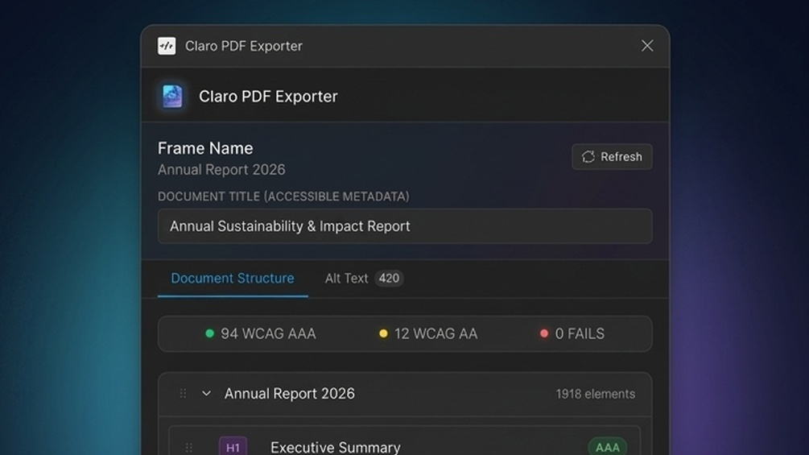
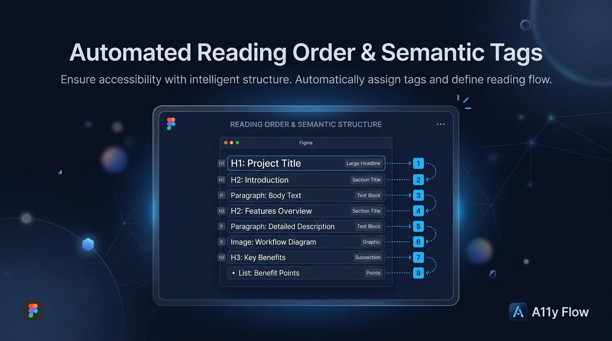
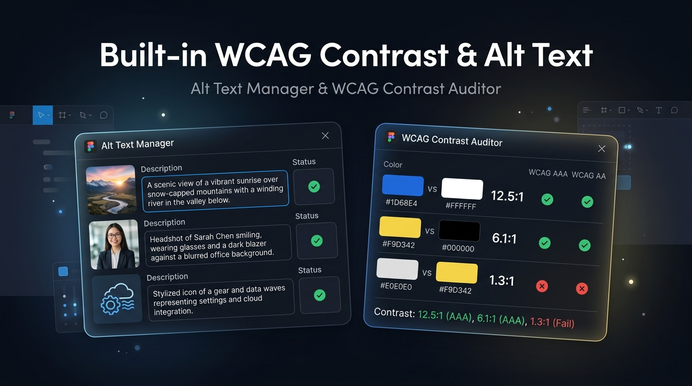
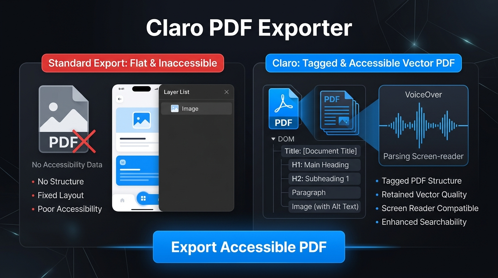

Claro PDF Exporter: Making Figma exports accessible, structured, and completely free
Standard Figma PDF exports flatten designs into unreadable paths and images with zero document hierarchy. Screen readers struggle, audits flag compliance errors, and ATS scanners drop resumes. I built Claro to solve this directly inside Figma.
The Problem with Standard Figma Exports
If you have ever exported a slide deck, a client brief, or a resume from Figma as a PDF, the visual output looks great on screen. Every font, layout, and image sits right where you placed it.
The real problem starts when anyone tries to parse that PDF programmatically. Under the hood, Figma flattens text layers into unreadable vector paths and raster images. There is no underlying structure, no headings, and no paragraphs.
That leads to real-world issues. Screen readers like VoiceOver, NVDA, and JAWS see an empty canvas or read disconnected fragments in random order. Corporate accessibility audits fail right away because there are no tagged elements. And for designers crafting resumes in Figma, recruiter Applicant Tracking Systems (ATS) often reject applications simply because their scanners cannot detect readable text.
It looks complete to our eyes, but underneath, the document is broken.

How Claro Solves It
I built Claro to give Figma exports real semantic structure. Instead of accepting flattened vectors as the only output, the plugin inspects the design directly on the canvas, analyzes how text and content relate to each other, and rebuilds a clean, accessible, tagged PDF from scratch.
Here is a look at the three core features that make that happen.
Automatic Semantic Hierarchy
Every accessible document needs clear organization. Claro evaluates each text element in your frame, looking at font sizes, line heights, font weights, and layout positions to classify content into natural headings (H1 through H6), body copy, and active hyperlinks.
It organizes elements in natural human reading order, rather than relying on Figma's internal layer stack, which can be backwards or disordered. Screen readers get a predictable document outline to navigate, and links stay interactive.
You do not have to tag everything by hand either. Claro reads the typographic decisions you already made in your design and turns them into a proper document tree automatically.

Built-in WCAG 2.1 Contrast Auditing
Accessibility issues are easiest to resolve when you catch them early - before handoff and before a compliance review sends designs back for rework. Claro runs real-time luminance checks on every text layer against its container background, displaying clear AAA, AA, or Fail contrast badges right in the plugin panel.
This lets you verify contrast compliance while you work in Figma, rather than discovering readability flaws after the file has already been exported and shared.

Tagged PDF & Alt-Text Metadata
Visual elements like photos, icons, and graphics need context for people using assistive tech. Claro allows you to attach persistent alt-text descriptions to images and artwork directly inside Figma.
When exported, Claro outputs a fully tagged PDF where headings retain their level, paragraphs remain readable text, and images include their alt-text labels. Assistive tech reads the file smoothly, and ATS scanners can index resume text without missing details.

Why Claro is Free
Many PDF plugins on the Figma Community offer a handful of free exports before locking features behind a subscription of $8 to $15 every month.
I believe accessibility should be a standard baseline, not an expensive luxury. Claro is completely free with unlimited exports. There are no paywalls, no mandatory sign-ups, and no telemetry tracking. You can install it and use it whenever you need.
"Accessibility should be a universal baseline, not an expensive luxury."
Reflection
Building Claro gave me the chance to connect product design with technical execution - turning an everyday frustration into a tool that helps other designers create more inclusive work.
Writing the TypeScript logic to parse Figma's canvas nodes and generate accessible PDFs was a great deep dive into document standards, ATS parsing, and assistive tools.
Claro is live and free on the Figma Community →